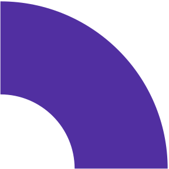

Looking for a place where your child's learning meets joy?
For 2026/27 we're enrolling pupils at both levels of our elementary school and opening our new kindergarten LittleFLOW.
Open Day — Wednesday 6 May at 17:00
Education for the future:
our approaches and methods
At FLOW School we offer educational programs that are carefully designed for developing the abilities and talents of each student. We focus on a combination of innovative teaching approaches with a solid academic foundation, to ensure that our students are prepared for the challenges of the 21st century.
How we teach at Flow
Our vision is to be a regional leader in the area of elementary education based on project-based learning, technology and expanded foreign language teaching, with the aim of achieving positive systematic change across the Czech Republic. Our mission is to help children develop the thinking of future innovators.

Holistic development of children
Overall, our school emphasizes an innovative and holistic approach to education that respects individual needs and interests of each child. We try to create an environment in which children can learn through experiences, discovering and practical application of knowledge. Our goal is to equip them with skills and knowledge necessary for successful life in the 21st century, while key values such as collaboration, creativity, critical thinking and social responsibility are firmly embedded in our educational program.
Events and excursions
Regular excursions are an integral part of our educational program, allowing children to explore the world outside of the classroom and to apply acquired knowledge in practice. These activities not only expand the horizons of children, but also support their social and emotional development. Additionally they allow children to better understand the complexity and reality of daily life and develop a sense of curiosity and desire for learning.


English according to Cambridge
Our school places emphasis on quality lessons in English, and therefore we collaborate with native speakers, who teach according to proven methods of Cambridge English and Jolly Phonics. This combined approach includes playful and interactive techniques, that children not only enjoy, but which also effectively support the development of their language skills. Regular Cambridge tests are then a valuable tool for measuring progress and readiness of children at an international level, which opens the door for them to global opportunities.
Comenia Script
Adopting the Comenia Script method in our teaching brings many benefits. This writing method is designed to be intuitive and support the natural development of writing skills in children. Thanks to its easy readability and comprehensibility, children learn to write more quickly and efficiently, leading to better and faster acquisition of the ability to write and read. Comenia Script thereby represents an important step forward in making written expression accessible to all students.


Hejny Method
Using the Hejny Method in mathematics represents a revolutionary approach, which focuses on deep understanding of mathematical principles and concepts through discovering, experimentation and practical application. This approach allows children to see math in broader contexts and use it as a tool for solving real problems. Thanks to this, mathematics stops being a scarecrow and becomes a fascinating subject, which develops logical thinking and analytical ability.
Morning circle
We begin each school day with a unique meeting - morning circle, where children have the opportunity to freely express themselves on any topic, share their emotions and mentally prepare for the upcoming day. This time is not only about sharing, but also about practicing non-violent communication, where children learn to express their thoughts and feelings in a way that respects others. The feedback session, a part dedicated to mutual feedback, helps build a positive attitude toward self-expression and strengthens the social skills of children.



Door to the unique talents of today's world
Creativity helps children discover and develop their unique talents. We support a creative approach to teaching, which allows them to come up with unconventional solutions to problems, experiment and express their thoughts in an original way. In our teaching we place emphasis on critical thinking, team-based work and innovation, which are the basis for developing creativity and adaptability in a constantly changing world.
Key to developing social skills
We encourage collaboration between students because we consider it essential for the development of their social skills and the ability to work effectively in a team. Collaboration is the basis for building interpersonal relationships, improving communication and developing empathy, which are qualities important not only in the school environment, but also in future professional and personal life.

Path to personal growth
Our goal is to develop deep self-awareness in students, which we consider the cornerstone of personal growth and success. We believe that self-awareness represents the first step toward self-reflection and self-regulation, which are key aspects for the formation of a strong and resilient personality.

Menu
Contact
Campus Location
Corner of Přívozní 1064/2a and Jankovcovy 53
Prague 7 - Holešovice
Registration No.: 08916403
Red IZO: 691016054 / IZO: 181129167
Data box: uf3q7m6
Get in Touch
General enquiries
info@skolaflow.czContact for GDPR representative:
gdpr@skolaflow.czInfo line (Mon–Wed, Fri: 9am–12pm)
+420 770 673 828